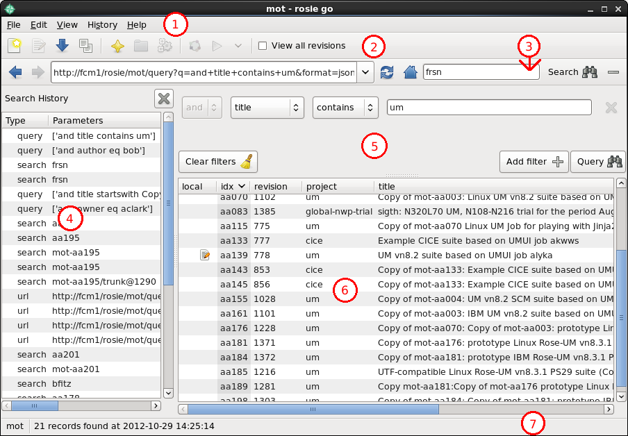

This document is released under the Open Government Licence.
To run rosie go open a terminal and type:
rosie go

To see what suites you have checked out on your machine click the Show local suites button in the address bar (usually represented using your system's home button icon). This will display a list of all the suites you have checked out relating to the current repository you are viewing. For help on switching to a different repository see Switching Repository.
When running searches, suites you have checked out will have an icon in the "local" column of the search results indicating the status of the local copy e.g. modified, older, newer etc. If no icon is shown then no local copy of that suite has been found.
The simplest method available for locating suites is to use the search function. Type a word or phrase into the search box and either click the search button or press Enter and a search will be run for suites containing the entered word/phrase in any of their properties. Results are shown in the results panel.
The same behaviour can also be obtained by typing search phrases in the
address box - similar to many web browsers. Note that the search phrase
entered in the address box should not begin with http or it
will be interpreted as a url. Should you wish to search for words/phrases
beginning http then you will need to use the search box.
Queries allow you to run more advanced suite searches, filtering results based on the values of particular properties.
If it is not already visible, the advanced search pane can be shown by clicking the Show/hide the advanced search pane button at the end of the address bar.
Queries are constructed by creating and combining filters comparing suite properties to various values. Each filter takes up a row in the advanced search pane. Use the drop down boxes to set filter operators, the property to be examined and the comparison operator to be used. The value against which the property is to be compared against (using your selected comparison operator) should be entered in the value box.
Additional filters can be added to the query by clicking the Add filter button. Similarly, individual filters can be removed by clicking the Remove query filter button found next to their value box. Should you wish to remove all the filters click the Clear filters button.
Once you are happy with the query you have set up, click the Query button to run it. As with running a search, results are shown in the results panel below.
More complex queries can be constructed using brackets. To enable use of bracketing click View -> View advanced controls. Combo boxes will then be added to the start and end of each filter allowing you to select the level of bracketing desired.
To search for suites using a url, type the url into the address box and press enter. The relevant search will then be run and results displayed. Note that running a search with a url will search the repository specified by the url rather than the one you currently have set.
Notice that after running a search or query the address box is updated with the url for that search or query. This can be copied and re-used in rosie lookup or shared with others so they can quickly run the same search by pasting the url into their address box or using it with rosie lookup rather than having to set up the same search by hand.
As you run various suite searches within rosie go they are recorded in your search history. To view your history, either click History -> Show search history or use the keyboard shortcut Ctrl-H
The Search History panel should now be displayed on the left-hand side of rosie go listing your past searches with their type - "search", "query" or "url", the parameters you used and whether or not you asked for all revisions of the returned suites.
You can order the results by type, parameters or whether you asked to see all revisions by clicking on the relevent column head.
To re-run one of these searches simply click on it. The search will then be set up and run.
If you want to clear your search history then click History -> Clear history. You will be asked to confirm this.
To close the history panel you can either close it by unticking show search history in the History menu, using the keyboard shortcut or simply clicking the close button at the top of the history panel.
N.B. rosie go only stores a limited number of past searches (100 by default) so older, less used searches will disappear from the history menu as new ones are run.
For details on how to search for all revisions of a suite rather than just the latest see Viewing All Revisions of a Suite.
To create a new suite click File -> New Suite. A wizard will then launch for you to enter suite discovery information and confirm suite creation.
To create a suite from an existing suite, right click on the suite you wish to create from and click Copy Suite. As with creating a new suite this will launch a wizard for you to edit suite discovery information in.
To checkout a suite select it from the search results and click the Checkout button on the toolbar. Alternatively, right click the suite and select Checkout Suite from the popup menu.
Suites you have checked out can be identified by having an icon in the "local" column of the results table. You can also see all suites you have checked out from the current repository by clicking the Show local suites button on the address bar.
To delete all branches of, the trunk and any working copy of a suite, right click on the suite in search results and select Delete Suite from the pop-up menu. A dialog will then appear asking you to confirm you wish to go ahead with the deletion.
To delete only your working copy of a suite right click on it and select Delete Working Copy and press OK in the dialog that appears. Note that if you have any uncommitted changes in your working copy the option will be disabled until you either commit or revert the suite.
To edit a suite you have checked out, right click on it and select Edit Suite. This will launch the rose config-edit GUI with that suite open.
To run a suite, select a suite from the results panel and press the run suite button in the toolbar. If you would like to run a suite with some arguments right click it and select Run Suite .... This will display a dialog box for entry of the desired arguments.
N.B. you can only run suites you have checked out.
To obtain more information about a suite listed in the search results you can do one of two things; hold your mouse over the suite to display a tooltip containing more details or right click on the suite and click Info in the pop-up menu to display a dialog box containing further details.
To group results by column right click on a result in the column you wish to group by then click Group Column in the menu that appears. For example, to group by results by owner right click in the owner column and click Group Column. To ungroup results right click on any of them and click Ungroup in the pop-up menu. Results may only be grouped by one column at a time.
Suite search results can be ordered by property in either ascending or descending order. To do so, click on the column title for the property you wish to order by so an arrow is displayed next to it indicating the order in which the property is being sorted.
To show or hide columns displayed in the search results open the "View" menu and toggle the relevant check boxes on or off. The affected columns will then be either shown or hidden in the current results and those from subsequent searches. These settings will reset when you open a new rosie go session.
To view all revisions of a suite in the repository you can either toggle the View all revisions box in the toolbar or click View -> toggle all revisions and then run your search. Checking the View all revisions box will not update the current results.
From time to time you may find you want to refresh the search results being shown - perhaps as a result of collaborating on suite development. To do so either click the Refresh button on the address bar, or use the keyboard shortcut F5. Note that this re-runs the last search you carried out, so any changes in the GUI won't be picked up.
While rosie go is open it keeps track of the various searches you run and allows you to navigate back to previous searches. By clicking on the back and forward arrows you can navigate through the searches you have run in the current session. Alternatively, you can make use of the keyboard shortcuts Alt-left and Alt-right to move backwards and forwards respectively.
rosie go enables you to search for suites stored in different repositories by allowing you to swap between different sources. To change repository click on Edit -> Data source and then the name of the repository you wish to work with. On changing repository, rosie go will display your checked out suites for that repository.
You can tell what repository you are currently in from the title bar - X - rosie go, where X is the name of the repository - and from the data source shown in the left hand side of the status bar at the bottom of the window.
If you have run a suite and want to view its output select it in the results list, right click it and click View Output. A web browser will be opened allowing you to look at the suite output. Alternatively, you can view a suite and click the View Output button on the toolbar. If no output is available to look at then the menu option and button will be greyed out.